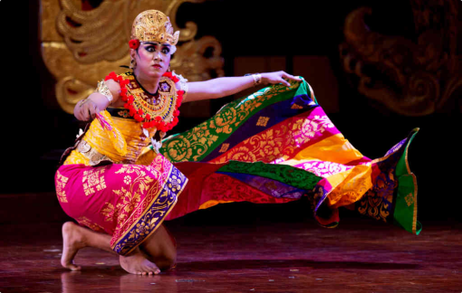
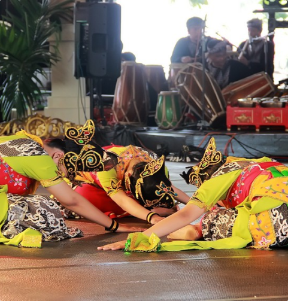
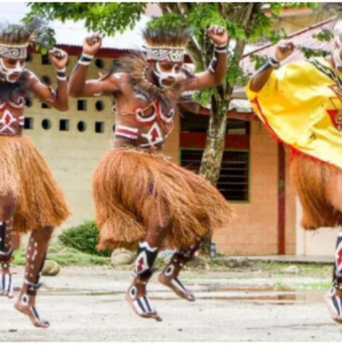
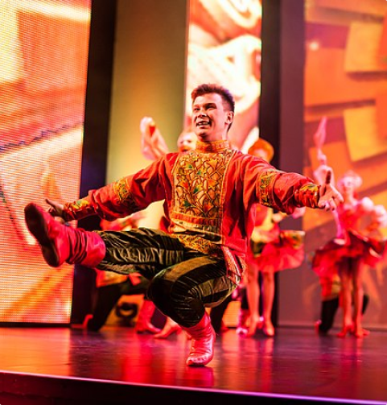

Level Posisi
level posisi atau lebih dikenal level dalam menari merupakan hal yang sudah menjadi satu kodrat dengan pola lantai, karena level dan pola lantai ini adalah suatu paket yang tidak terpisahkan.
Seni tari mengajarkan berbagai gerakan berirama yang terbagi menjadi level gerak tari tinggi, sedang, dan rendah. Level gerak digunakan untuk menciptakan pola yang memberi kesan dinamis terhadap gerakan sekelompok penari
Level adalah alat untuk mengukur ketinggian dengan batasan ketinggian tertentu. Misalnya, level meter pada tangki air, berguna untuk mengukur ketinggian air dalam tangki dengan satuan panjang (meter) maupun prosentase. sedangkan Level gerak tari adalah level gerak yang dilakukan oleh sekelompok penari dapat membentuk desain bawah dan atas. Desain ini dapat memberi kesan dinamis terhadap gerak yang dilakukan. Gerakan yang ditunjukkan pada level rendah, sedang dan tinggi akan membentuk desain kerucut.
Pengertian
Fungsi
Macam


Level rendah saat menari biasanya ketika penari melakukan gerakan rebah atau berguling di lantai atau duduk
level rendah

LEVEL TINGGI ADALAH SUATU GERAKAN TARIAN DIMANA PARA PENARI NYA MELAKUKAN HAL SEPERTI MELOMPAT,MELAYANG.
level tinggi

Level sedang adalah tarian yg dilakukan dengan cara membungkuk dan jongkok, contohnya tari srimpi dan tari Bambangan Cakil
level sedang
Halaman Selanjutnya

Home
Materi
Quiz
Contact